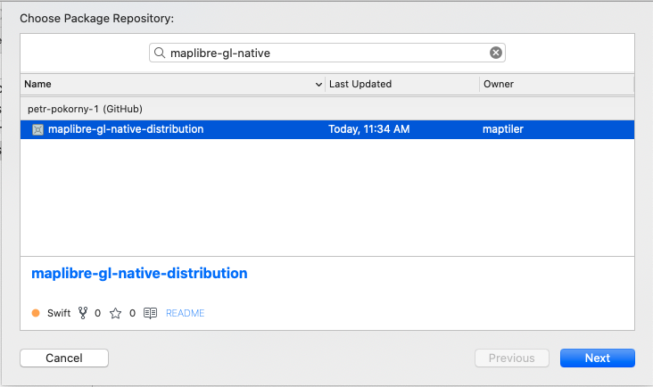
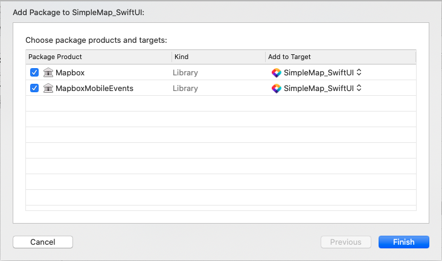
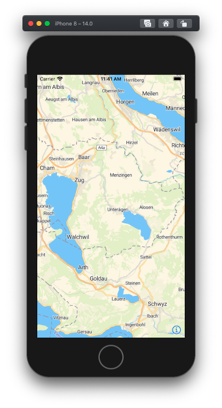

MapTiler Tutorial for iOS SwiftUI/Swift
This tutorial describes how to create a simple iOS application using Swift and SwiftUI.
This tutorial was written for macOS
Create new project
Open Xcode and create new project. Choose iOS -> App template. In the "Choose options for your new project" select Interface to "SwiftUI", lifecycle to "SwiftUI App", language to "Swift"
Add MapLibre Native SDK for iOS
Add MapLibre SDK to your project using Swift Package Manager.
- To add a package dependency to your Xcode project, select File > Swift Packages > Add Package Dependency and enter its repository URL. You can also navigate to your target’s General pane, and in the “Frameworks, Libraries, and Embedded Content” section, click the + button, select Add Other, and choose Add Package Dependency.
- Either add MapTiler GitHub distribution URL (https://github.com/maptiler/maplibre-gl-native-distribution) or search for
maplibre-gl-nativepackage.
 - Choose "next". Xcode should clone the distribution repository and download the binaries. Choose both mapBox and MapBox Mobile Events libraries.

Create the SwiftUI View for the map
In your project, add new SwiftUI View to the SimpleMap_SwiftUI folder and name it MapView.swift
MapTiler Key
- Create MapTiler cloud account.
- Obtain the api key.
- Set the MapTilerKey property in
SimpleMap_SwiftUI/info.plistto the value obtained in the previous step. - Add the following method to MapView.swift. The method will MapTilerKey from property list.
func getMapTilerkey() -> String {
let mapTilerKey = Bundle.main.object(forInfoDictionaryKey: "MapTilerKey") as? String
validateKey(mapTilerKey)
return mapTilerKey!
}
Create MapBox map view
- In your project, add new SwiftUI View to the SimpleMap_SwiftUI folder and name it
MapView.swift -
In order to use native UIKit views in SwiftUI view, you must use
[UIViewRepresentable](https://developer.apple.com/documentation/swiftui/uiviewrepresentable)wrapper. The instance of custom type which adoptsUIViewRepresentableprotocol is responsible for creation and management a UIView object in your SwiftUI interface.struct MapView: UIViewRepresentable { ... } -
The
UIViewRepresentablerequires to implementmakeUIViewController(context:)method that creates the instance of with the desired UIKit view. Add the following code to create map view instancefunc makeUIView(context: Context) -> MGLMapView { // read the key from property list let mapTilerKey = getMapTilerkey() validateKey(mapTilerKey) // Build the style url let styleURL = URL(string: "https://api.maptiler.com/maps/streets/style.json?key=\(mapTilerKey)") // create the mapview let mapView = MGLMapView(frame: .zero, styleURL: styleURL) mapView.autoresizingMask = [.flexibleWidth, .flexibleHeight] mapView.logoView.isHidden = true mapView.setCenter( CLLocationCoordinate2D(latitude: 47.127757, longitude: 8.579139), zoomLevel: 10, animated: false) // use the coordinator only if you need // to respond to the map events mapView.delegate = context.coordinator return mapView } -
The
UIViewRepresentableview also requires to implementupdateUIView(_:context:)which is used to configure the newly created instance. We dont need to configure anything so we will keep it empty.func updateUIView(_ uiView: MGLMapView, context: Context) {}
Respond to map events
If order to to respond to map events, for example perform an action after MapView initialization finished. In SwiftUI, a Coordinator can be used with delegates, data sources, and user events. The UIViewRepresentable protocol defines makeCoordinator() method which creates coordinator instance. Add the following code to declare coordinator class:
class Coordinator: NSObject, MGLMapViewDelegate {
var control: MapView
init(_ control: MapView) {
self.control = control
}
func mapViewDidFinishLoadingMap(_ mapView: MGLMapView) {
// write your custom code which will be executed
// after map has been loaded
}
}
And then add the following method to the SwiftUI view:
func makeCoordinator() -> MapView.Coordinator {
Coordinator(self)
}
And finally set the reference coordinator on mapbox map view
mapView.delegate = context.coordinator
